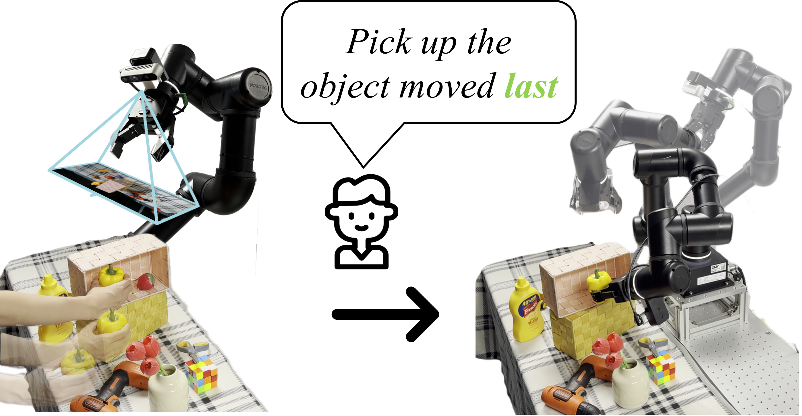
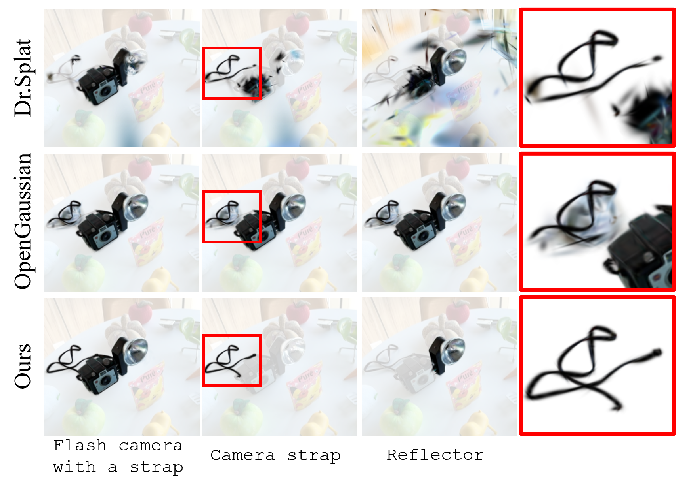
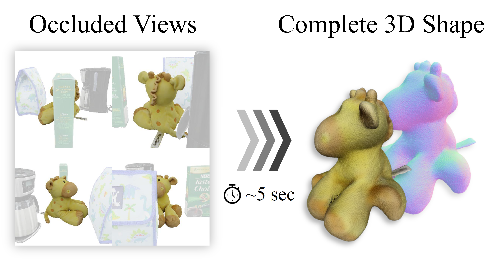
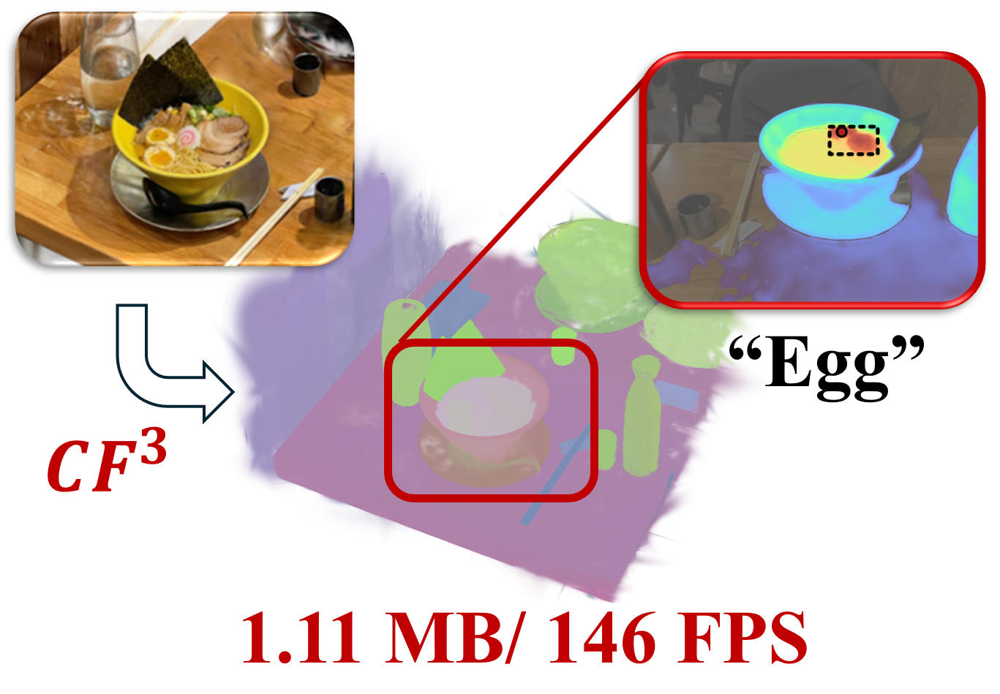
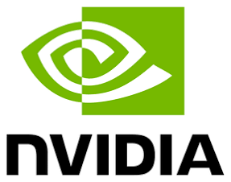
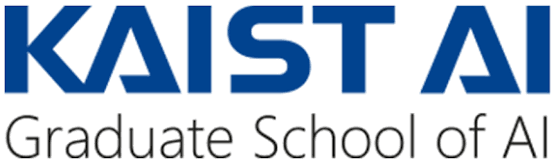
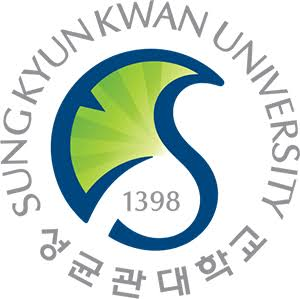
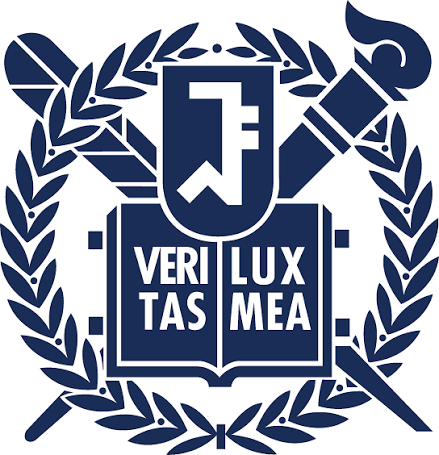

Hyunjoon Lee
I am an integrated MS/PhD student at VGI Lab (Visual and Geometric Intelligence Lab) at Seoul National University, where I am advised by Prof. Jaesik Park.
My research interests lie at the intersection of robotics and 3D vision. I am particularly interested in how we can leverage rich scene information to enhance robot manipulation capabilities in complex environments.

Publications
* equal contribution




⚡ Runs on a local laptop.
Domestic
Projects
Real2Sim VLA
A VLA model was fine-tuned on real-world scene data, and the corresponding scene was reconstructed with 2DGS and converted into a USD-compatible mesh for integration with Isaac Sim. This enables the VLA to run in a photorealistic Real2Sim environment for post-training and diverse scene-level evaluation.
Experience
-

-

Research Intern @ HuGe Lab, KAIST AIAdvisor: Beomjoon KimDeveloped a model to predict 6-DoF grasp poses using a depth sensor.Jun. 2023 - Sep. 2023 -

Research Intern @ CSI Lab, SKKUAdvisor: Yusung KimDeveloped an RL agent using the PPO algorithm and transformer architecture.Jan. 2023 - Jun. 2023 -
Research Intern @ CAMAS Lab, SKKUAdvisor: Jachoon KooDeveloped a mathematical model to elucidate the stiffness mechanism of the soft gripper.Dec. 2019 - Mar. 2020
Education
-

-
Sungkyunkwan University (SKKU)Summa Cum Laude (1/131), GPA: 4.39/4.5Mar. 2018 - Feb. 2024
Awards & Honors
-
AwardOutstanding Paper Presentation Award ×2
-
AwardOutstanding Paper Presentation Award
-
AwardHonorable Mention
-
AwardOutstanding Paper Presentation Award
-
Invited TalkSNU Graduate of AI Research Exchange
-
AwardTop Excellence Award
-
AwardOutstanding Award
-
Invited TalkNaverLabs
-
Honor 2020–21Dean's List Award
-
Scholarship 2018–21Scholarship for Academic Excellence
Patents
-
Patent 2025CF3: Compact and Fast 3D Feature Fields